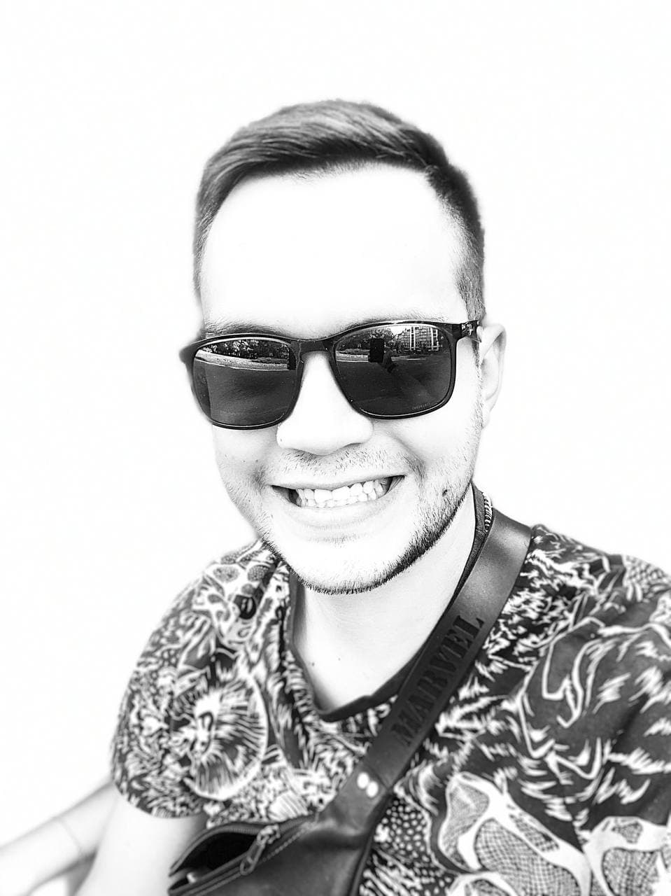

Contact information
Education
- 2000 – 2010 – Poltava Gimnasium №30.
- 2010 – 2012 – Lyceum at the Poltava State Agrarian Academy of economic orientation.
- 2012 – 2016 – Poltava State Agrarian Academy (specialty - management), Bachelor.
- 2016 – 2018 – Poltava State Agrarian Academy (specialty - management), Master.